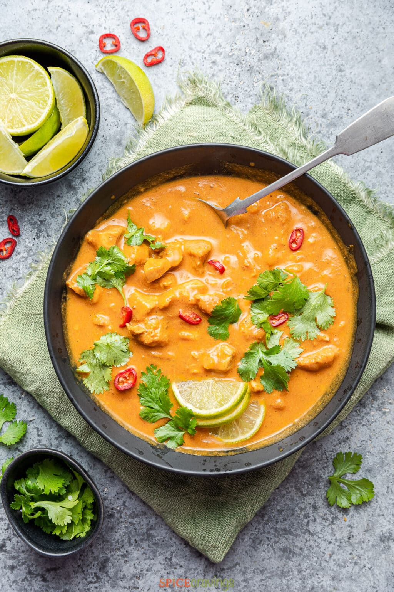

Coconut Chicken Curry

A delicious, creamy, slightly sweet and unforgetable coconut curry
Ingredients
- 1 large chicken breast
- 2 tbs mild red curry paste
- 2 tbs dark soy sauce
- 1 can coconut milk
- 1 lime
- 1 tbs brown sugar
- 1 cup whatever vegetables you wish to add
- 2 generations family members who know how to cook
Steps
- The first, and arguably most important step is to have 2 generations of solid
cooks in your family. With this, you should have learned how to measure with your
heart and your eyes, rather than a measuring spoon.
- To begin cooking this recipe, you will first need to cut your chicken breasts and
tenderize them with your favorite method. I'm partial to the corn starch method.
- Once your chicken is tender, it's time to cook. Heat 1 tbs vegetable oil over high
heat, cook chicken until golden brown and cooked through.
- Remove your chicken from the heat, reserving any oil and chicken bits. Remove from
heat and add curry paste to oil, stirring constantly until fragrant. Return to heat
and add coconut milk and soy sauce.
- This is the part where those cooking skills will come in handy. Add whatever your
little heart desires. I usually add some brown sugar, carrots, peppers and potatoes.
Once veggies are soft, add chicken into mixture. Remove from heat and add lime juice.
It's important to add the lime when the dish is removed from the heat because otherwise
the flavor will disappear completely with the heat. Serve over rice or rice noodles.